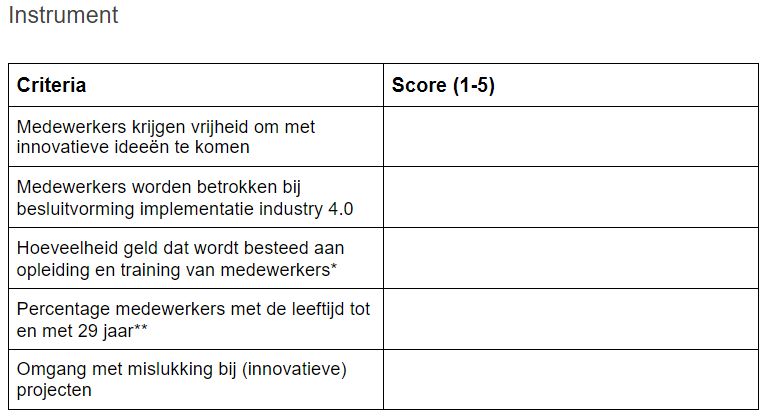

Smart Start is het begin van de Minor Smart Industry. Bij dit vak maak je kennis met industry 4.0. We zijn begonnen met alle onderdelen te beschrijven die te maken hebben met industry 4.0. Hierbij hoort onder andere Smart Products, Digital Factory en Smart working. Daarna hebben we gekeken naar de organisaties. Hoe bepaal je hoe smart een bedrijf is? Hoe zorg je ervoor dat het bedrijf Smart wordt? Ook hebben we uitgebreid gekeken naar co-design. Dit houdt in dat bedrijven samen met eindgebruikers producten maken. Vaak worden producten gemaakt zonder te overleggen met de eindgebruikers. Dit kan teleurstellend resultaat opleveren.
Als laatste hebben we een hele interessante opdracht gedaan. We hebben een instrument gemaakt om de bedrijfscultuur te meten. Deze hebben we op het einde van het project ingevuld voor onze opdrachtgever, Defensie. Het is leuk om te zien dat dit instrument in de praktijk goed werkt. We gaan dit ook voorleggen aan de opdrachtgevers.
Hieronder staat wat ik heb geleerd tijdens deze cursus.
Dit instrument gaat gebruikt worden in Smart Project.
